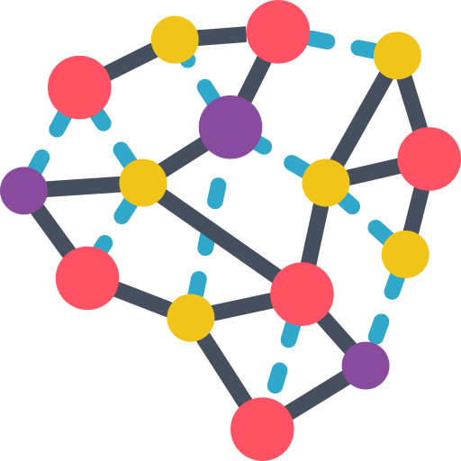

Artificial Intelligence Tools & Frameworks
Development of neural networks is a long process which requires a lot of thought behind the architecture and a whole bunch of nuances which actually make up the system.
These nuances can easily end up getting overwhelming and not everything can be easily tracked. Hence, the need for such tools arises, where humans handle the major architectural decisions leaving other optimization tasks to such tools. Imagine an architecture with just 4 possible boolean hyperparameters, testing all possible combinations would take 4! Runs. Retraining the same architecture 24 times is definitely not the best use of time and energy.
Also, most of the newer algorithms contain a whole bunch of hyperparameters. Here’s where new tools come into the picture. These tools not only help develop but also, optimize these networks.
List of AI Tools & Frameworks/h1>
Scikit Learn
is one of the most well-known ML libraries. It underpins many administered and unsupervised learning calculations. Precedents incorporate direct and calculated relapses, choice trees, bunching, k-implies, etc. It expands on two essential libraries of Python, NumPy and SciPy. It includes a lot of calculations for regular AI and data mining assignments, including bunching, relapse and order. Indeed, even undertakings like changing information, feature determination and ensemble techniques can be executed in a couple of lines. For a fledgeling in ML, Scikit-learn is a more-than-adequate instrument to work with, until you begin actualizing progressively complex calculations.
Tensorflow
On the off chance that you are in the realm of Artificial Intelligence, you have most likely found out about, attempted or executed some type of profound learning calculation. Is it accurate to say that they are essential? Not constantly. Is it accurate to say that they are cool when done right? Truly! The fascinating thing about Tensorflow is that when you compose a program in Python, you can arrange and keep running on either your CPU or GPU. So you don’t need to compose at the C++ or CUDA level to keep running on GPUs. It utilizes an arrangement of multi-layered hubs that enables you to rapidly set up, train, and send counterfeit neural systems with huge datasets. This is the thing that enables Google to recognize questions in photographs or comprehend verbally expressed words in its voice-acknowledgment application.
PyTorch
PyTorch is an AI system created by Facebook. Its code is accessible on GitHub and at the present time has more than 22k stars. It has been picking up a great deal of energy since 2017 and is in a relentless reception development.
Auto ML
Out of all the tools and libraries listed above, Auto ML is probably one of the strongest and a fairly recent addition to the arsenal of tools available at the disposal of a machine learning engineer.